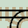
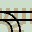
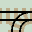
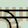
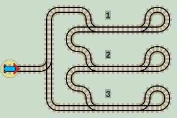
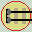

Sprung Points

Sprung points allow trains arriving on the curved 'branch' line to join the 'main' line. The points may be briefly opened by the trains wheels, but 'spring back' as the train passes, hence its name. Trains on the main line, travelling in either direction, stay on the main line and never leave on the branch line.
The handedness of a sprung point is described by the side that the diverging track leaves.
So
 
are left-hand points and


are left-hand points and

 are right-hand points.
are right-hand points.
Subroutines
Sprung points enable us to construct 'calls' to separate areas of a layout, a kind of 'Gosub & Return'. Each area is a self contained subroutine which performs a specific task. Once the task is complete, the train returns back along the same track.
| 

|
| Click layout to pause/run train | Click start circle to reset train |
For example, here are 3 subroutines, which are visited in order. The train enters a closed 'Program Loop' and will carry out subroutines 1 > 2 > 3 > forever.
However, sprung points allow us to build networks where we can control which tracks are traversed, and in which order. Therefore we can break down a large layout into a series of sublayouts in order to solve a computational problem.
These methods provide an effective technique for constructing large complex layouts by a system of 'Divide & Conquer'. Tasks can be reduced into a series of smaller ones. We can control how the train traverses a layout, which tasks are performed and in what order.
Infinite Loops
As the above layout and the ones on the previous page show, it is all too easily for the train to fall into an infinite loop from which it cannot escape by any further point switching. This traps the train and prevents the calculation from completing. The use of subroutines helps avoid this, because we can ensure that at least one subroutine returns the train to the start position to halt the computation.
Alan Turing
Due to the Turing Halting problem, we never know if a train will return from a complex layout. If it becomes trapped in an infinite loop, the calculation will carry on forever and never return an answer. It may have no answer. The calculation may not be computable. The calculating layouts on the next few pages are small enough to check that the train returns to the start and halts. |

Alan Turing |
Lazy & Sprung Points
The two types of points are deliberatly drawn differently to make layouts easier to follow. Lazy points are symmetrical. Sprung points have a straight main line and a curved joining (never leaving) branch line. This creates a strong visual form which makes common network elements easier to recognise.
When operating a computational layout, sprung points are mostly ignored, as they simply merge a branch line onto a main line. Indeed, the term 'points' often only refers to the lazy points in a layout.
Next we'll use both types of point to construct functions.
Duplo
Duplo provides both lazy (new) and sprung (old) types of point, so can be used to build real examples of all layouts (see Duplo pages).